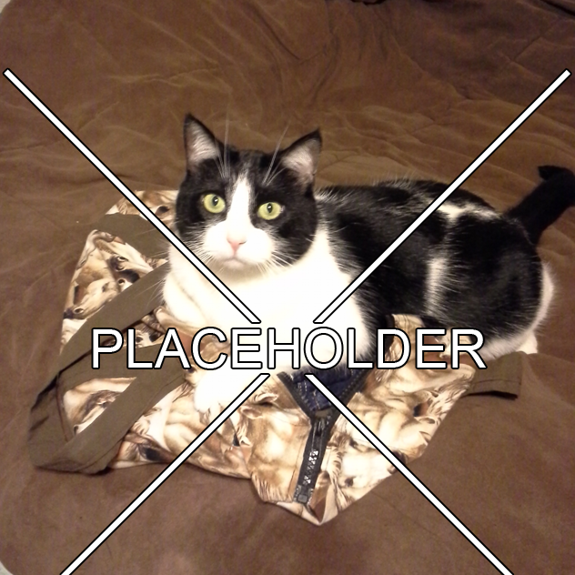

<div id="ux-projects" class="row row-fluid oi_wall">
  <div class="oi_strange_portfolio_item oi_col col-md-4 wall-portfolio-long">
      <div class="oi_strange_portfolio_item_holder">
            <a href="W3.html">
              
                <div class="oi_mask">
                    <h4 class="oi_sub_legend">W<sup>3</sup></h4>
                    <div class="oi_port_sep"></div>
                    <div class="oi_port_cats">UX/UI Design</div>
                    <div class="oi_small_descr">Find current or future weather & wave conditions for your favorite water activities.</div>
                </div>
            </a>
      </div>
    </div>
     <div class="oi_strange_portfolio_item oi_col col-md-4 wall-portfolio-long">
            <div class="oi_strange_portfolio_item_holder">
             <a href="">
                 
                 <div class="oi_mask">
                     <h4 class="oi_sub_legend">Future Project</h4>
                     <div class="oi_port_sep"></div>
                     <div class="oi_port_cats">UX/UI Design</div>
                     <div class="oi_small_descr">Details to come.</div>
                 </div>
             </a>
         </div>
     </div>
    <div class="oi_strange_portfolio_item oi_col col-md-4 wall-portfolio-long">
            <div class="oi_strange_portfolio_item_holder">
             <a href="">
                 
                 <div class="oi_mask">
                     <h4 class="oi_sub_legend">Future Project</h4>
                     <div class="oi_port_sep"></div>
                     <div class="oi_port_cats">UX/UI Design</div>
                     <div class="oi_small_descr">Details to come.</div>
                 </div>
             </a>
         </div>
     </div>
</div>
<div class="row row-fluid oi_wall">
    <div class="oi_strange_portfolio_item oi_col col-md-4 wall-portfolio-long"  style="padding-bottom: 30px;">
        <div class="oi_strange_portfolio_item_holder">
            <a href="">
                
                <div class="oi_mask">
                    <h4 class="oi_sub_legend">Future Project</h4>
                    <div class="oi_port_sep"></div>
                    <div class="oi_port_cats">UX/UI Design</div>
                    <div class="oi_small_descr">Details to come.</div>
                </div>
            </a>
        </div>
    </div>
</div>

<!-- Accompanying CSS -->
<!--
/* ========================================================
-----------------Index > Portfolio Pieces
=========================================================== */

#ux-projects {}
.row {}
.row-fluid {}
.oi_wall {margin-left: 0px; margin-right: 0px;}
.oi_strange_portfolio_item {margin-bottom:30px;}
.oi_strange_portfolio_item .oi_mask {position:absolute; top:10px; left:10px; bottom:10px; right:10px; opacity:0; background:#fff; padding:40px;}
.oi_strange_portfolio_item:hover .oi_mask {opacity:1;}
.oi_strange_portfolio_item:hover .oi_mask h4 {margin-top:0px;}
.col-md-4 {width:33.333%; float:left; overflow:hidden;}
.wall-portfolio-long {}
.oi_strange_portfolio_item_holder {position:relative; opacity:0; opacity:1\9 !important}
.img-responsive /*img*/ {max-width:100%; display:inline-block; height:auto; display:inline-block; text-align:center;}
.oi_mask h4 {margin-top:-10px;}
.oi_sub_legend.search_blog_title {font-size:20px !important; line-height:32px;}
.oi_port_sep {height:3px; width:40px; background:#21BDA4}
.oi_port_cats {color:#999; margin-top:10px;}
.oi_small_descr {color:#000; margin-top:20px;}

	/*Wall*/
	.oi_wall {margin-left:0px; margin-right:0px;}
	.oi_col.col-md-4, .oi_col.col-md-8 {margin-bottom:0px; padding:0px;}
	.oi_wall .oi_strange_portfolio_item .oi_mask {top:10px; left:10px; bottom:10px; right:10px;}

  /*Sidebars*/
  .img-responsive {width:100%; display:block; text-align:center !important; margin:0 auto}

.oi_mask h4, .oi_strange_portfolio_item:hover .oi_mask h4{
-webkit-transition: all 0.3s ease-in-out;
-moz-transition: all 0.3s ease-in-out;
-ms-transition: all 0.3s ease-in-out;
-o-transition: all 0.3s ease-in-out;
transition: all 0.3s ease-in-out;
-webkit-backface-visibility: hidden; /* Chrome, Safari, Opera */
backface-visibility: hidden;
}

a, a:hover, .oi_strange_portfolio_item_holder .oi_mask, .oi_strange_portfolio_item_holder:hover .oi_mask, .oi_header_menu ul, .oi_header_menu li:hover ul {
-webkit-transition: all 0.1s ease-in-out;
-moz-transition: all 0.1s ease-in-out;
-ms-transition: all 0.1s ease-in-out;
-o-transition: all 0.1s ease-in-out;
transition: all 0.1s ease-in-out;
-webkit-backface-visibility: hidden; /* Chrome, Safari, Opera */
backface-visibility: hidden;
}

.oi_strange_portfolio_item_holder {
-webkit-transition: all 0.8s ease-in-out;
-moz-transition: all 0.8s ease-in-out;
-ms-transition: all 0.8s ease-in-out;
-o-transition: all 0.8s ease-in-out;
transition: all 0.8s ease-in-out;
-webkit-backface-visibility: hidden; /* Chrome, Safari, Opera */
backface-visibility: hidden;
}

/*----------------------------------------------------
[5. Responsive]
-----------------------------------------------------*/
@media (min-width: 767px) and (max-width: 1080px) {
	.oi_strange_portfolio_item {width:50%;}
  .col-md-4.hidden-sm {height:0px !important; margin:0px !important; display:none !important; visibility:hidden !important;}
}
@media (min-width: 0px) and (max-width: 767px) {
	.oi_small_descr {display:none;}
}

-->
